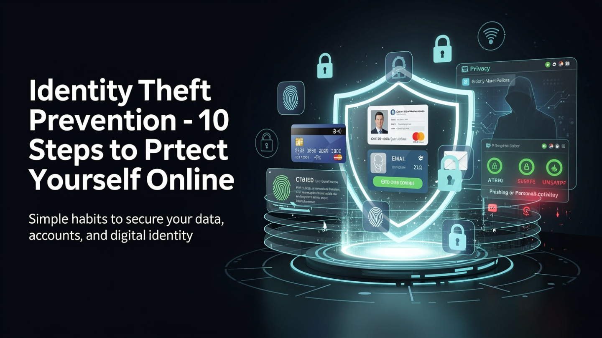

Blog Post
Published - May 09, 2026
Identity Theft Prevention - 10 Steps to Protect Yourself Online
Identity theft is largely preventable. These practical habits help protect your accounts, credit, personal data, and recovery options before damage is done.

Someone's identity is stolen every 22 seconds in the United States. That's not a typo. By the time you finish reading this sentence, another person is dealing with drained bank accounts, ruined credit, or fraudulent tax returns filed in their name.
The scary part? Most victims had no idea it was happening until the damage was done.
The good news: identity theft is largely preventable. It doesn't require a computer science degree or expensive software. It requires consistent habits, and that's exactly what this guide is about.
Here are 10 practical, proven identity theft prevention steps you can start implementing today.
What Is Identity Theft (And Why Should You Care)?
Identity theft happens when someone steals your personal information, such as your name, Social Security number, credit card details, or passwords, and uses it for financial gain or fraud.
It can take many forms:
- Financial identity theft - using your credit cards or opening new accounts in your name
- Tax identity theft - filing a fraudulent tax return to steal your refund
- Medical identity theft - using your insurance to get medical care or prescriptions
- Criminal identity theft - giving your name to law enforcement during an arrest
According to the FTC, Americans reported losing over $10 billion to fraud in 2023, the highest figure ever recorded. And that's only what gets reported.
The aftermath isn't just financial. Victims spend an average of 200 hours resolving identity theft cases. That's five full work weeks of your life, gone.
So let's make sure it never gets to that point.
Step 1: Use Strong, Unique Passwords for Every Account
This is the single most impactful thing you can do, and most people still get it wrong.
Using the same password across multiple sites is like using one key for your house, your car, your office, and your safe deposit box. If someone gets that key, they get everything.
Here's what a strong password actually looks like:
- At least 16 characters long
- A mix of uppercase, lowercase, numbers, and symbols
- No dictionary words, names, or predictable patterns
- Completely unique - never reused across accounts
A strong password might look like: Gx7#mPqL2!vRnT9@
Can't remember something like that? You don't have to. Use a password generator to create them instantly and a password manager to store them securely Use our free password generator
Quick fact: 81% of data breaches are caused by weak or reused passwords. Fixing this one habit eliminates the majority of your risk.
Step 2: Enable Two-Factor Authentication (2FA) Everywhere
A strong password is your first line of defense. Two-factor authentication (2FA) is your backup when that line gets breached.
2FA requires a second form of verification beyond your password, usually a code sent to your phone, generated by an app, or confirmed via biometrics. Even if a hacker has your password, they can't get in without that second factor.
Where to enable 2FA first:
- Email accounts (Gmail, Outlook)
- Banking and financial apps
- Social media accounts
- Cloud storage (Google Drive, iCloud, Dropbox)
- Your password manager
The best 2FA method is an authenticator app like Google Authenticator or Authy, not SMS text messages, which can be intercepted through SIM-swapping attacks.
Yes, it adds 10 seconds to your login. It also adds a near-impenetrable wall between you and identity thieves.
Step 3: Monitor Your Credit Reports Regularly
You're entitled to a free credit report every week from all three major bureaus, Equifax, Experian, and TransUnion, through AnnualCreditReport.com.
Most people never look at theirs. Identity thieves count on that.
When reviewing your report, look for:
- Accounts you didn't open
- Hard inquiries you didn't authorize
- Addresses you've never lived at
- Employers you've never worked for
- Debts you don't recognize
Any of these could be a red flag that someone is using your identity. Catching it early is the difference between a 30-minute fix and a 2-year nightmare.
Step 4: Freeze Your Credit (It's Free and Takes 10 Minutes)
If you're not actively applying for credit, freeze it. A credit freeze, also called a security freeze, prevents anyone from opening new credit accounts in your name, even if they have your Social Security number.
This is one of the most powerful identity theft prevention tools available, and most people have never used it.
How to freeze your credit:
- Visit each bureau's website: Equifax, Experian, and TransUnion
- Create an account and request a freeze
- Store the PIN or password they give you somewhere safe
It's free. It doesn't affect your credit score. And you can lift it temporarily whenever you need to apply for a loan or credit card.
There's genuinely no reason not to do this.
Step 5: Watch Out for Phishing Scams
Phishing is the art of tricking you into handing over your information voluntarily, and it's gotten frighteningly sophisticated.
Modern phishing attacks don't look like the obvious "Nigerian prince" emails of the early 2000s. They look like:
- A PayPal email saying your account has been suspended
- A text from "your bank" asking you to verify a suspicious transaction
- A LinkedIn message from a recruiter with a link to a "job application"
- An Amazon notification about a failed delivery
Red flags to watch for:
- Urgent language designed to create panic ("Act now or your account will be closed!")
- Email addresses that almost match the real company (support@paypa1.com)
- Links that don't match the displayed text
- Requests for your password, SSN, or payment info via email
The rule is simple: never click links in unsolicited emails. Go directly to the website by typing it into your browser.
Step 6: Secure Your Social Media Profiles
Your social media accounts are a goldmine for identity thieves, and most people don't realize how much they're giving away.
Your birthday, hometown, high school, mother's maiden name, first pet's name: these are the exact answers to common security questions used by banks, email providers, and government sites.
What to do:
- Set your profiles to private or friends-only
- Remove or hide your birthday, phone number, and hometown
- Stop posting vacation photos in real time (this also signals your home is empty)
- Never share your full address, workplace schedule, or daily routines publicly
- Review which third-party apps have access to your accounts and revoke anything you don't use
Identity theft isn't always the result of a sophisticated hack. Sometimes a thief just reads your Facebook profile.
Step 7: Be Careful With Public Wi-Fi
That free Wi-Fi at your favorite coffee shop? It's a hacker's playground.
Public networks are often unencrypted, which means anyone on the same network can potentially intercept your traffic, including login credentials, banking sessions, and personal data.
How to stay safe on public Wi-Fi:
- Use a VPN (Virtual Private Network) to encrypt your connection
- Avoid logging into banking or financial accounts on public networks
- Turn off automatic Wi-Fi connection on your devices
- Use your phone's mobile hotspot instead when handling sensitive information
- Look for HTTPS in the URL bar, and never enter sensitive info on HTTP sites
A quality VPN costs about $3-5/month and is one of the best investments you can make for your online privacy.
Step 8: Shred Physical Documents (Yes, Really)
Digital threats get all the attention, but physical theft is still very real. Dumpster diving, literally going through people's trash, remains a surprisingly common method of identity theft.
Think about what you throw away:
- Bank and credit card statements
- Medical bills and Explanation of Benefits forms
- Pre-approved credit card offers
- Old tax returns
- Utility bills with your account number
All of that is a treasure map for an identity thief.
The fix: Buy a cross-cut shredder (not strip-cut, because those can be reassembled) and shred anything with your name, address, account numbers, or personal identifiers before tossing it.
Also consider switching to paperless statements for all your accounts. Less paper = less risk.
Step 9: Set Up Account Alerts and Notifications
You can't be watching your accounts 24/7, but your bank can do it for you.
Most banks, credit unions, and credit card companies offer free real-time transaction alerts via text or email. Set them up for:
- Any transaction over a certain dollar amount (even $1 catches small test charges)
- International transactions
- Card-not-present transactions (online purchases)
- ATM withdrawals
- Login attempts from new devices
Beyond your bank, consider signing up for a free credit monitoring service like Credit Karma or Experian's free tier. They'll alert you whenever a new account is opened in your name or a hard inquiry is made.
Early detection is everything. The faster you catch fraud, the less damage it does.
Step 10: Know What to Do If It Happens Anyway
Even with every precaution in place, breaches happen. Companies you trust get hacked. Data gets leaked. Knowing what to do immediately can save you months of headaches.
If you suspect identity theft:
- Place a fraud alert with one of the three credit bureaus (they're required to notify the others)
- Freeze your credit at all three bureaus immediately
- Report it to the FTC at IdentityTheft.gov, where they'll create a personalized recovery plan
- File a police report, because some creditors and insurers require this
- Contact affected companies, and call the fraud department of any account that was compromised
- Change all passwords starting with your email, then banking, then everything else
Document everything. Keep records of every call, every letter, every email. You'll need them.
Signs Someone May Already Be Using Your Identity
Not sure if you've been compromised? Watch for these warning signs:
- Unexplained charges on your bank or credit card statements
- Bills or collection notices for accounts you didn't open
- Being denied credit unexpectedly when your score should be fine
- Missing mail (thieves sometimes redirect your mail)
- Unfamiliar accounts appearing on your credit report
- The IRS notifying you that multiple tax returns were filed in your name
- Medical bills for treatments you never received
If any of these ring a bell, act immediately. Time is the critical variable in identity theft recovery.
How to Check If Your Information Is Already Out There
Want to know if your email or passwords have already been exposed in a data breach? Visit HaveIBeenPwned.com and enter your email address. It'll tell you exactly which breaches your data appeared in.
If your email shows up in a breach:
- Change the password for that account immediately
- Change it anywhere else you used the same password
- Enable 2FA on the affected account
- Use a strong, unique password going forward: generate one here
This takes five minutes and can reveal years of exposure you didn't know about.
Frequently Asked Questions
What are the 5 most effective ways to prevent identity theft?
The five most impactful steps are: (1) using strong, unique passwords for every account, (2) enabling two-factor authentication, (3) freezing your credit, (4) monitoring your credit reports regularly, and (5) being vigilant about phishing scams. Together, these eliminate the vast majority of identity theft risk.
How do I check if someone is using my identity?
Check your credit reports at AnnualCreditReport.com for unfamiliar accounts or inquiries. Look for unexpected bills, collection notices, or IRS notices. You can also check HaveIBeenPwned.com to see if your email appeared in a known data breach.
Is a credit freeze the same as a credit lock?
Not exactly. A credit freeze is a legal right guaranteed by federal law and is always free. A credit lock is a service offered by the bureaus, sometimes paid, that offers similar protection but with fewer legal guarantees. A freeze is generally the stronger option.
Does identity theft protection actually work?
Paid identity theft protection services (like LifeLock or Aura) offer monitoring, alerts, and recovery assistance, but they can't prevent theft from happening. The free steps in this guide, including credit freezes, strong passwords, and 2FA, are more effective at prevention. Paid services are better thought of as an insurance policy.
What should I do immediately if my identity is stolen?
Report it to the FTC at IdentityTheft.gov, place a fraud alert with the credit bureaus, freeze your credit, file a police report, and change all your passwords starting with your email account. Act fast, because the first 24-48 hours matter most.
How long does it take to recover from identity theft?
It depends on how quickly you catch it and how many accounts were affected. Minor cases can be resolved in a few days. Complex cases involving multiple fraudulent accounts or tax fraud can take months or even years to fully resolve.
Final Thoughts
Identity theft isn't a matter of if, it's a matter of when and how prepared you are.
The good news is that the steps above don't require technical expertise or a big budget. They require about an afternoon of setup and a few consistent habits going forward. Freeze your credit. Use strong passwords. Enable 2FA. Stay skeptical of unsolicited messages.
Start with Step 1 right now: generate a strong, unique password, update your most critical accounts, and work your way down the list.
Your future self will thank you.